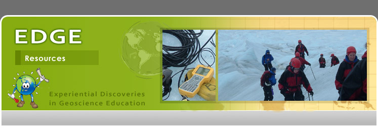

Home
About EDGE
Components
Teachers
Summer Workshop
Online Course
Participants & Products
Students
Workshop
Science Fair
Participants & Products
Resources
Assessment
Publications
Photo Gallery
External Links
People
Team
Contacts
Photo Gallery
EDGE student photo gallery
(external link)
Interview with EDGE teachers: Chris Jacobson and Sue Skvorc
(8 Minute video: ~12 MB; .mov format)
EDGE participants in action
Click a picture to see a larger view.
Photo gallery generated by